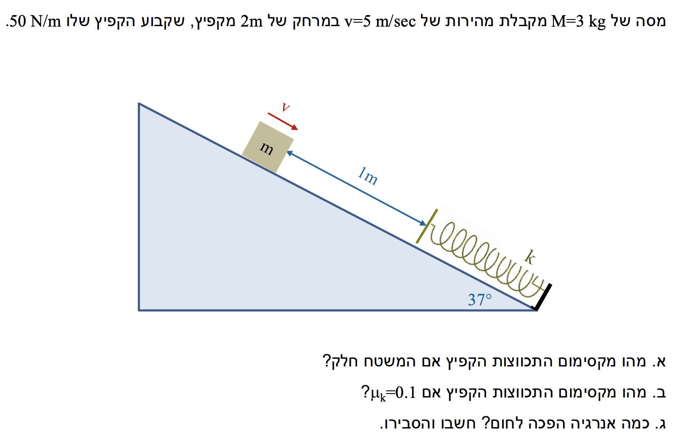

פתרון מודרך, מפורט ומוסבר צעד-אחר-צעד - רמת 5 יח"ל
vervAUTO|auto
נוסח השאלה

[תמונת השאלה המקורית]לא נמצאה תמונה בשם question-image.png באותה תיקייה.
שלב אפס: ריכוז נתונים והמרת יחידות (MKS)
לפני שנתחיל לפתור, נוודא שכל הנתונים שקיבלנו מהטקסט נמצאים במערכת היחידות הסטנדרטית (קילוגרם, מטר, שניות):
מסת הגוף: \( m = 3\text{ kg} \) (תקין).
מהירות התחלתית: \( v_0 = 5\text{ m/s} \) (תקין).
מרחק התחלתי לקפיץ: נתון בטקסט במפורש כי המרחק הוא \( d = 2\text{ m} \).
קבוע הקפיץ: \( k = 50\text{ N/m} \) (תקין).
זווית המישור המשופע: \( \alpha = 37^\circ \).
תאוצת הכובד: נשתמש בערך החיובי \( g = 10\text{ m/s}^2 \).
💡 הערת מורה: תאוצת הכובד \(g\) היא תמיד גודל חיובי. כאשר נרכיב משוואות כוחות, הסימן (פלוס או מינוס) ייקבע אך ורק לפי כיוון הציר שבחרנו. בנוסף, חשוב לזכור: המילה "תאוטה" לא קיימת בלקסיקון שלנו. אנו נדבר על "תאוצה" שכיוונה מנוגד לכיוון המהירות, ולכן גודל המהירות קטן.
סעיף א': מקסימום התכווצות במשטח חלק
📋 מה נתון:
המשטח חלק, כלומר אין כוח חיכוך הפועל על הגוף לאורך התנועה (\(\mu = 0\)). מכאן נובע שעבודת הכוחות הלא משמרים היא אפס (\(W_{\text{nc}} = 0\)).
🎯 מה מחפשים:
אנו מחפשים את שיעור כיווץ המקסימום של הקפיץ, אותו נסמן באות \( x \). בנקודת הכיווץ המקסימלי, הגוף נעצר רגעית, כלומר גודל מהירותו שווה לאפס (\( v_f = 0 \)).
נקבל שתי תוצאות. התוצאה השלילית נפסלת כי הגדרנו את כיוון ההתכווצות כחיובי. לכן ניקח את התוצאה החיובית:
$$ x = \frac{105.6}{50} \approx 2.11\text{ m} $$
💡 הערת מורה: חוק שימור האנרגיה מציג את העוצמה של שיקולי אנרגיה בפיזיקה. כוח הקפיץ הוא כוח שמשתנה ככל שהקפיץ מתכווץ (לפי חוק הוק \(F=k\Delta l\)). אם היינו מנסים לפתור את השאלה רק בעזרת קינמטיקה וחוקי ניוטון, היינו נתקלים בבעיה עם תאוצה משתנה שדורשת אינטגרלים. בעזרת אנרגיות, אנו פשוט משווים את "המצב ההתחלתי" ל"מצב הסופי" ופותרים בקלות!
סעיף ב': מקסימום התכווצות עם חיכוך
📋 מה נתון:
בסעיף זה נוסף נתון חדש: המשטח אינו חלק יותר. קיים מקדם חיכוך קינטי בין הגוף למשטח שגודלו \(\mu_k = 0.1\).
🎯 מה מחפשים:
אנו מחפשים שוב את כיווץ המקסימום \( x \), אך כעת המערכת מאבדת אנרגיה מכנית כתוצאה מעבודת כוח החיכוך לאורך כל מסלול התנועה.
תרשים כוחות חופשי (FBD) - מסודר ומדויק:
התרשים מציג את הכוחות הפועלים על הגוף בזמן שהוא מכווץ את הקפיץ.
📐 נוסחאות מהדף:
\( \Sigma \vec{F} = m\vec{a} \)\( f_k = \mu_k N \)\( W = F \cos\theta \Delta s \)
✏️ הצבה ופתרון:
ראשית, עלינו למצוא את כוח החיכוך, ולשם כך נזדקק לכוח הנורמלי \(N\). נפעיל את החוק השני של ניוטון עבור גוף המסה בלבד, בציר ה-\(y\) (הציר המאונך למישור המשופע). הגוף אינו ממריא או שוקע בתוך המשטח, לכן התאוצה בציר זה היא אפס (\(a_y = 0\)).
$$ \Sigma F_y = m a_y $$
$$ N - mg\cos(\alpha) = 0 $$
$$ N = mg\cos(37^\circ) = 3 \cdot 10 \cdot 0.8 = 24\text{ N} $$
כעת נחשב את גודל כוח החיכוך הקינטי:
$$ f_k = \mu_k N = 0.1 \cdot 24 = 2.4\text{ N} $$
כוח החיכוך פועל תמיד בניגוד לכיוון התנועה. עבודת כוח החיכוך (שהוא כוח לא משמר) לאורך כל דרך \(\Delta s = 2 + x\) תהיה:
$$ x = \frac{99.94}{50} \approx 1.9988 \approx 2\text{ m} $$
💡 הערת מורה:
שימו לב כיצד כניסת החיכוך למערכת שינתה את התוצאה: ההתכווצות קטנה יותר (\(2\text{ m}\) לעומת \(2.11\text{ m}\)). האנרגיה המכנית ההתחלתית אבדה בחלקה בגלל עבודת החיכוך (שהיא שלילית), ולכן נותרה פחות אנרגיה להמרתה לאנרגיה אלסטית פוטנציאלית בסוף המסלול.
דגש פיזיקלי חשוב: במהלך התכווצות הקפיץ, פועלים על הגוף שלושה כוחות במקביל למישור: רכיב משקל \(mg\sin\alpha\) (למטה בכיוון המדרון), כוח קפיץ \(F_{sp}\) (למעלה) וכוח חיכוך \(f_k\) (למעלה). שקול הכוחות האלו יוצר תאוצה שכיוונה במעלה המדרון (מנוגד למהירות). בגלל שהתאוצה והמהירות מנוגדות בכיוונן, גודל המהירות של הגוף הולך וקטן עד לעצירה.
סעיף ג': אנרגיה שהפכה לחום
📋 מה נתון:
אנו מתבססים על המערכת עם החיכוך מסעיף ב'. מצאנו כי הגוף התקדם עד עצירה והתכווצות הקפיץ הייתה בשיעור \( x = 2\text{ m} \).
🎯 מה מחפשים:
אנו מתבקשים לחשב ולנמק כמה אנרגיה הפכה לחום במהלך התנועה עד הכיווץ המקסימלי.
✏️ הצבה ופתרון:
אנרגיית חום אינה אלא הערך המוחלט של העבודה שעשה כוח החיכוך הקינטי. כוח החיכוך, בניגוד לכבידה, הוא כוח לא משמר, ועבודתו גורמת לחימום משטחי המגע (המרת אנרגיה מכנית לאנרגיה תרמית מיקרוסקופית).
המרחק הכולל לאורך המדרון שבו פעל כוח החיכוך הוא:
$$ \Delta s_{total} = d + x = 2 + 2 = 4\text{ m} $$
💡 הערת מורה - הסבר נדרש לסעיף:
כאשר מבקשים "חשבו והסבירו", לא מספיק רק להציג מספר. ההסבר הפיזיקלי הוא: כאשר שני משטחים משתפשפים זה בזה (הבלוק והמדרון), המבנה המיקרוסקופי שלהם מתנגש, מה שגורם להגברת תנועת החלקיקים ברמה האטומית - זוהי טמפרטורה וחום. העבודה השלילית של החיכוך באה לידי ביטוי בגריעת אנרגיה מכנית מהמערכת המאקרוסקופית, ועל פי חוק שימור האנרגיה הכללי בטבע, אנרגיה זו מומרת בדיוק לחום. לכן הגודל המוחלט של עבודת החיכוך שווה לכמות החום שנוצרה (\(9.6 \text{ Joules}\)).
נוסח השאלה המקורית
[תמונת השאלה המקורית]לא נמצאה תמונה בשם question-image.png.